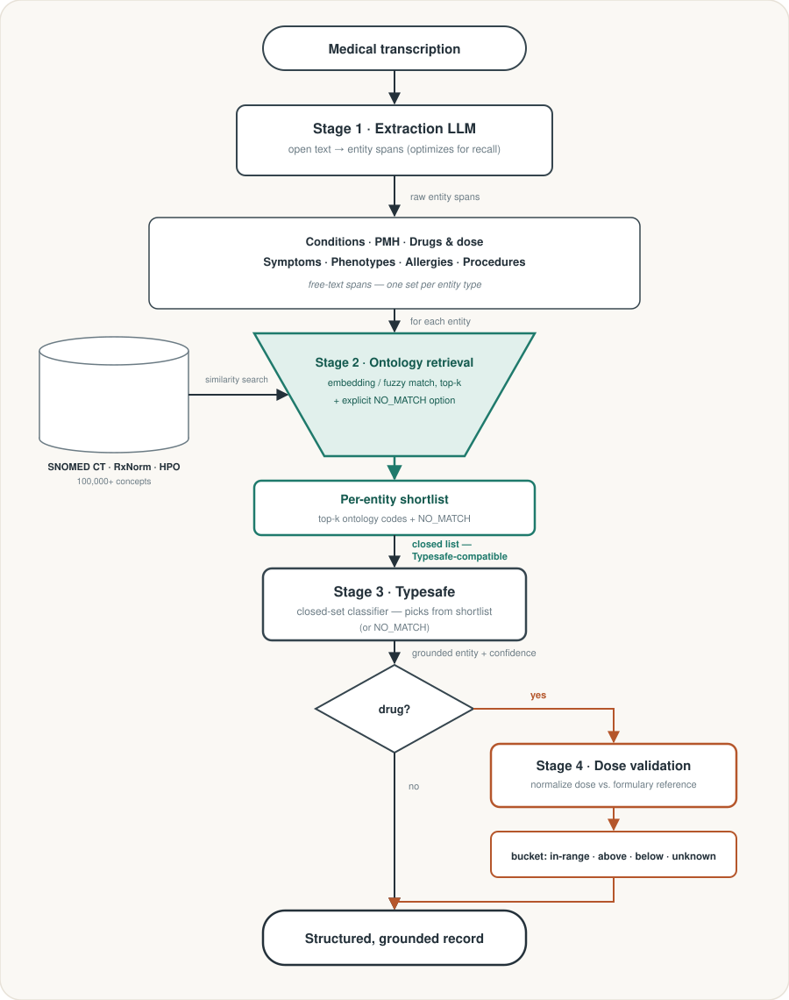

medical entity grounding
Medical transcripts are increasingly turned into structured data by LLMs (conditions, drugs and doses, symptoms, allergies, procedures) because coding every note by hand doesn't scale. The problem: LLMs are free-text generators, and a free-text generator can hallucinate a drug that was never mentioned, misread a dose, or assert a diagnosis the transcript doesn't support. In a medical record that's not cosmetic. It's a patient-safety and liability risk. This demo grounds every extracted entity against a real clinical ontology before it's trusted, using Typesafe's System One and its Jev model as the verification step.

why a closed-set judge
The fix for hallucination sounds simple: check each extracted entity against a real
ontology (SNOMED CT, RxNorm, HPO) instead of trusting the raw span. The catch is that
Typesafe's
System One
only ever judges from an explicitly enumerated list of options: a
Choice
between named alternatives, a
Noul
yes/no question, or a
Score
against a rubric — and an ontology is anything but small: SNOMED CT, RxNorm, and HPO
each carry 100,000+ concepts. You can't hand Typesafe "the whole ontology" as its answer
set. The pipeline below exists to solve exactly that mismatch: a regular LLM does the
open-ended part, and Typesafe/Jev is only ever asked to pick from a small, per-entity
candidate set it's handed. Because Jev can only select from that set, the worst it can do
is pick the wrong real candidate, or correctly return NO_MATCH — either
way, an explicit, checkable answer with a confidence score, never an unverifiable free-text
guess.
the pipeline
-
Stage 1 · Extraction
A general-purpose LLM reads the transcription and pulls out candidate entities as raw free-text spans across seven categories — conditions, past medical history, drugs (with dose/route/frequency as written), symptoms, phenotypes, allergies, and procedures. This stage is tuned for recall over precision: no vocabulary constraint, and ambiguous or hedged mentions get extracted rather than filtered out.
-
Stage 2 · Ontology candidate retrieval
For each raw entity, retrieves a short list of plausible matches — SNOMED CT (or ICD-10) for conditions/PMH/symptoms/procedures, RxNorm for drugs, HPO for phenotypes — via embedding similarity with lexical/fuzzy fallback, top-k = 5–10. The shortlist always includes an explicit
NO_MATCHoption, so Stage 3 is never forced to pick an incorrect code when retrieval comes up empty. -
Stage 3 · Typesafe classification
Typesafe's Jev model receives the entity's text and surrounding context, plus the Stage 2 shortlist as its complete set of possible outputs, and selects the correct grounding (or
NO_MATCH). It returns the selected answer, a confidence score, and the full probability distribution over every listed option — a verified, ontology-grounded entity instead of an unchecked guess. -
Stage 4 · Dose validation
Once a drug is grounded to an RxNorm concept, its dose is normalized to structured units, checked against a reference dosing range (formulary data, RxNorm's dosing fields, or DailyMed labels), and Typesafe classifies it into
within_range,above_range,below_range, orunknown_reference.
open questions
Still-open implementation decisions, left honest rather than papered over:
- Ontology licensing — SNOMED CT and RxNorm require UMLS access; MONDO, HPO, Uberon, ChEBI, and NCIt don't.
- Retrieval implementation — a precomputed embedding index vs. a lexical/fuzzy search (e.g. OLS4) as a first version.
- Dosing reference data — the actual source for Stage 4's reference dosing ranges.
- Shortlist size — too small risks omitting the correct code; too large stops being a closed list Typesafe can classify against.
stack
code
Demo pipeline built against a public sample of de-identified medical transcriptions (Kaggle's Medical Transcriptions dataset). Not a production system — a working proof of the grounding architecture.